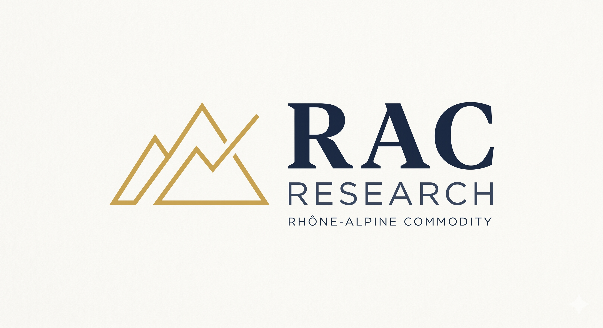

The Rhône does not announce itself. It moves carving through the Alps, feeding the great lakes, carrying Alpine water into the Mediterranean. For centuries that corridor has been a route for trade: salt, grain, oil, metals. Today, the companies that move the world's physical commodities still cluster along it. Geneva. Zug. The river has not changed its purpose.
RAC Research was built in that tradition. Not as an institution, not as a trading house but as an independent analytical voice anchored to the geography that understands commodities better than anywhere else on earth. One commodity. One thesis. One page. Rigorous enough to be taken seriously. Independent enough to say what the desk notes do not.
The energy transition is restructuring commodity markets faster than most existing research frameworks can track. European gas and power markets have undergone structural changes from Russia's role as a dominant supplier to the rapid buildout of LNG infrastructure and renewables that require analysis grounded in the physical market, not just financial price action.
My background in quantitative research, portfolio management, and ESG transition risk provides a direct entry point. The same questions I explored empirically in the sustainable lending paper how climate transition risk prices into financial markets are live in real time across commodity curves. RAC Research is where that work becomes operational.
We write from the country where the trades are made. That proximity is not decoration. It is the entire point.